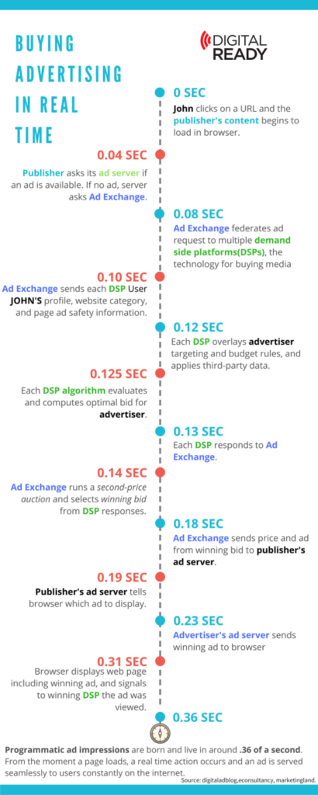

`https://ag-link.xyz/`
Plenum immer Mittwoch Abends 19.00Uhr in XXX
Schreibt uns unter ag-link@riseup.net
Wir alle haben uns an personalisierte Werbung und das dazugehörige Tracking gewöhnt.
Zwar sind die meisten (Studie zur Aktzeptanz?) eher ablehnend ggü. Werbung eingestellt, allerdings veranlasst es uns meistens nicht dazugehörige
unser Verhalten zu ändern.
Ad Blocker erlauben zwar zumindest im Browser das surfen erträglicher zu machen, aber an vielemn Stellen haben wir keine Wahl.
Und so richtig wissen wir eigentlich nicht welche Daten durch wen gesammelt werden und was dann mit denen passiert.
Personalisierte Werbung wurde in den letzten Jahren so akkurat, dass sich das Gerücht etablierte, dass FB NutzerInnen über das Mikrofon belauscht.
Dies ist inzwischen weitestgehend wiederlegt, allerdings helfen andere Techniken dabei ein ähnlich akurates Ergbenis zu erzielen.
## Cookies
Tracking Pixel
1x1 großes Bild als Code im HTML der Webseite oder E-Mail.
Registriert Nutzerverhalten
Klassisch ist dies ein einfaches HTML Tag:
Wobei heutzutage in der Regel JavaScript pixels verwendet werden
Tracking Pixel
* IP Adresse (Liefert Informationen zu eurem ISP)
* Browser (Chrome, Firefox, etc.)
* Geräte Typ (Mobile, Desktop, Tablet)
* Operating System (iOS, Android, Windows, etc.)
* Bildschirmgröße
* Referrer (Von wo aus ihr auf die Seite gelangt seit)
Außerdem
- Messen von Verhalten und "conversions"
- Beavioural retargeting ermöglichen
- BetreiberInnen profitieren von Insights und Metriken
- Anbieter profitieren von Daten
Und was springt für uns dabei raus?
* Personalisierte Werbeerfahrung.
* Gezieltere Anzeigen führen häufiger zu Käufen.
* Bessere generelle Nutzererfahrung durch Optimierung der Webseiten
Auktion eines Werbeplatzes

## Auswirkungen von micro targeting?
- ermöglicht manipulation (cambridge analytica)
# Micro targeting
> In der Bundestagswahl 2021 nutzten alle etablierten parteien Microtargeting im Wahlkampf. (Netzpolitik 2017)
Die FDP schaltete bspw. Facebook-Werbungen, die sie abhängig von der Zielgruppe für oder gegen staatliche CO2-Limits positionierten. ("grüne Interessen", "Vielreisende").
## Energieverbrauch
Der Stromverbrauch des Webenetzwerkes wird je nach Quelle auf
um die 110TWH / Jahr geschätzt.
https://www.sciencedirect.com/science/article/pii/S0195925517303505
## Ad AdBlocking
Wie können wir unsere privatspäre schützen / kontrolle über unsere Daten erlangen?
## Browser plugins
* Einfach einzurichten
* Funktionieren nur im Browser
* nicht auf jedem Gerät verfügbar (Smart TV, Innerhalb von Apps)